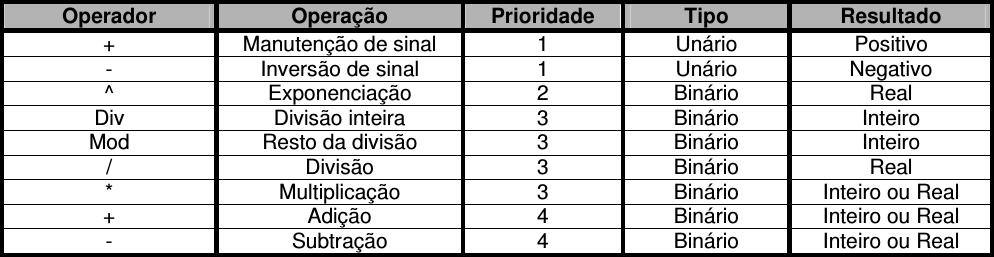
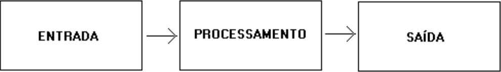
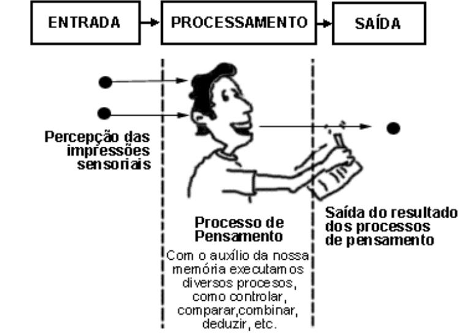
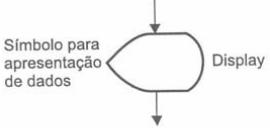
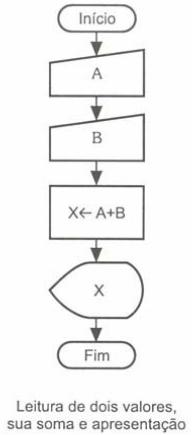

Lógica de programação
Aula 02 - Tipos de dados e Instruções primitivas
Igor Conrado Alves de Lima - prof.igor@microcamp.com.br
Computadores, problemas e soluções
- Computadores foram feitos para solucionar problemas
- Problemas são solucionados manipulando dados e instruções
Tipos de dados
Computadore são capazes de processar três tipos básicos de dados:
- Dados numéricos (inteiros e reais);
- Dados caracteres;
- Dados lógicos.
Tipos de dados: Inteiros
- São caracterizados como tipos inteiros os dados numéricos positivos ou negativos, excluindo-se destes qualquer número fracionário.
- Por exemplo: 35, 0, -56, etc.
Tipos de dados: Reais
- São caracterizados como tipos reais os dados numéricos positivos, negativos e números fracionários.
- Por exemplo: 35.0, 0.0, -56, 1.2, -45.897, etc.
Tipos de dados: Literais
- São caracterizados como tipos literais às seqüências contendo letras, números e símbolos especiais.
- Também conhecido como alfanumérico, string, caracter ou cadeia.
-
Por exemplo:
- "Microcamp Tecnologia"
- "Web design"
- "R. São Francisco, 625 - Centro"
- "Fone:(82) 3481-6699"
- etc.
Tipos de dados: Lógicos
- São caracterizados como tipos lógicos os dados com valores verdadeiro e falso.
- Também conhecido como tipo booleano.
Variáveis
Variáveis
Definição: Tudo aquilo que é sujeito a variações, que é incerto, instável ou inconstante.
Todo dado a ser armazenado na memória de um computador deve ser previamente identificado.
Variáveis: Analogia
- Imagine que a memória do computador é um grande arquivo com várias gavetas;
- Cada gaveta pode apenas armazenar um único valor (seja ele numérico, lógico ou caractere);
- Como podemos saber o que cada gaveta contém?

Variáveis: Regras de uso
- Nomes de uma variável poderão ser atribuídos com um ou mais caracteres;
- O primeiro caractere do nome de uma variável sempre deverá ser uma letra;
- O nome de uma variável não poderá possuir espaços em branco;
- O nome de uma variável não poderá ser uma palavra reservada (uma instrução ou comando);
- Não poderão ser utilizados outros caracteres a não ser letras não-especiais, números e sublinhado.
Variáveis: Regras de uso
Nomes válidos:
- NOMEDOUSUARIO, telefone, x, z, delta_25, z1, etc.
Nomes inválidos:
- NOME DO USUARIO, 25_delta, telefone#, escreva, verdadeiro, etc.
*escreva e verdadeiro são palavras reservadas no Portugol.
Constantes
Constantes
Definição: tudo aquilo que é fixo ou estável.
Por exemplo, o valor 1.23 na seguinte fórmula:
RESULTADO <- ENTRADA * 1.23
Operadores Aritméticos
Operadores Aritméticos
Necessário para realizar operações aritméticas com constantes* e variáveis*.
*Desde que seja do tipo real ou inteiro.
Operadores Aritméticos

*A tabela segue a prioridade matemática entre os operadores.
**O operador de exponenciação também pode ser **.
Expressões Aritméticas
Expressões Aritméticas
Considere a expressão
X = { 43 . [ 55 : ( 30 + 2 ) ] }
Em Portugol, essa expressão seria representada como
X <- ( 43 * ( 55 / ( 30 + 2 ) ) )
Expressões Aritméticas
Como faríamos para representar em Portugol a fórmula da área de uma circunferência?
AREA = π.RAIO2
Expressões Aritméticas
Em Portugol, AREA = π.RAIO2 seria:
AREA <- 3.14159 * RAIO * RAIO
Expressões Aritméticas
E se tivéssemos que efetuar o cálculo da área de um triângulo, em que é necessário efetuar a multiplicação da base pela altura e em seguida dividir pela constante 2, como ficaria?
Expressões Aritméticas
Em Portugol, a fórmula para calcular a área de um triangulo ficaria
AREA <- (BASE * ALTURA) / 2
Fases fundamentais de um algoritmo
ENTRADA: Onde se define a entrada de dados do algoritmo.
PROCESSAMENTO: Onde os dados de entrada serão processados para a obtenção do resultado final.
SAÍDA: Onde serão apresentados os dados já processados.

Fases fundamentais de um algoritmo
Analogia com o homem:

Instruções Básicas
Instruções são representadas pelo conjunto de palavras-chaves (vocabulário) de uma linguagem de programação.
Nossos programas utilizam as instruções leia() (para a entrada de dados) e escreva() (para a saída de dados).
Instruções Básicas: Simbologia
Instrução leia():
Instrução escreva():

Problema
Crie um programa que efetue a leitura de dois valores numéricos. Faça a operação de soma entre os dois valores e apresente o resultado obtido.
Problema
Algoritmo:
- Ler dois valores, no caso variáveis A e B;
- Efetuar a soma das variáveis A e B, implicando o seu resultado na variável X;
- Apresentar o valor da variável X após a operação de soma dos dois valores fornecidos.
Problema
Diagrama de blocos:

Problema
Português estruturado:
algoritmo "soma_numeros"
// Função : Efetuar a soma de dois valores e mostrar o resultado
// Autor : Igor
// Data : 26/8/2015
// Seção de Declarações
var
X: inteiro
A: inteiro
B: inteiro
inicio
// Seção de Comandos
leia(A)
leia(B)
X <- A + B
escreva(X)
fimalgoritmo
Hora de exercitar!
Exercícios
- Desenvolver a lógica para um programa que efetue o cálculo da área de uma circunferência, apresentado a medida da área calculada.
- Construir um programa que efetue o cálculo do salário líquido de um professor. Para fazer este programa, você deverá possuir alguns dados, tais como: valor da hora aula, número de horas trabalhadas no mês e percentual de desconto do INSS. Em primeiro lugar, deve estabelecer qual será o seu salário bruto para efetuar o desconto a ter o valor do salário líquido.